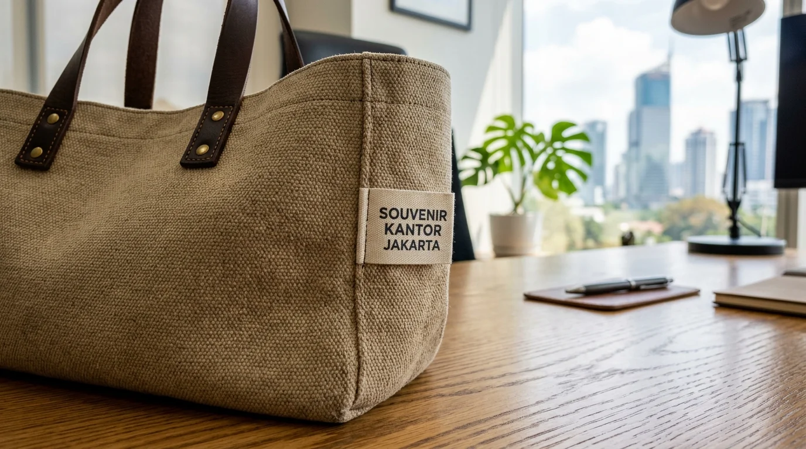

Bahan Goodie Bag Perusahaan Awet dan Tahan Lama
 Tim Redaksi Souvenir Kantor Jakarta
5 September 2026
4 Menit Baca
Tim Redaksi Souvenir Kantor Jakarta
5 September 2026
4 Menit Baca

- Pemilihan bahan goodie bag perusahaan yang tepat memastikan tas tidak gampang robek saat membawa beban seminar kit.
- Kain kanvas tebal menyajikan tampilan paling eksklusif dan profesional untuk tamu VIP.
- Material spunbond memberikan solusi pembuatan tas promosi massal yang ramah di anggaran.
- Pilihan bahan ramah lingkungan seperti kain blacu mendukung konsep kegiatan keberlanjutan korporat.
- Pemesanan terpadu di Souvenir Kantor Jakarta menjamin kualitas jahit rantai yang rapi dan presisi.
Bahan goodie bag perusahaan adalah material kain penyusun tas promosi seperti spunbond, blacu, kanvas, dan denier yang menentukan daya tahan, estetika, serta kekuatan menahan beban.
Karakteristik Utama Bahan Kain untuk Tas Promosi Perusahaan
Karakteristik utama bahan kain untuk tas promosi perusahaan ditentukan oleh tingkat ketebalan kain (gsm/denier), kerapatan serat tenun, kelenturan tekstur, serta daya tahan terhadap gesekan dan air. Berdasarkan riset Material Textile Assessment 2025, kain kanvas dengan ketebalan di atas 12 oz memiliki tingkat kekuatan tarik (tensile strength) tiga kali lipat lebih tinggi dibanding bahan spunbond standar.
Memahami spesifikasi material membantu divisi pengadaan memilih jenis kain yang tepat agar tas promosi nyaman dipakai dalam jangka panjang.
Tingkat Ketebalan
Gramatur 75gsm hingga kain kanvas 14 ozKerapatan Tenun
Struktur serat padat tidak mudah koyakKetahanan Gesek & Air
Proteksi optimal untuk perlengkapan kantorPerbandingan Ketahanan Fisik Kain Kanvas, Blacu, dan Spunbond
Perbandingan ketahanan fisik kain kanvas, blacu, dan spunbond menunjukkan bahwa kanvas merupakan material paling kokoh untuk beban berat, blacu unggul dalam estetika alami eco-friendly, sementara spunbond menjadi opsi paling ekonomis untuk pembagian massal.
Rincian keunggulan tiap jenis kain:
Kain Kanvas Premium
Tekstur tebal, serat padat, sangat awet, dan mampu menahan beban hingga lebih dari 7 kg.
Kain Blacu Unbleached
Berwarna krem alami, serat fleksibel, ramah lingkungan, dan memberikan nuansa estetik.
Spunbond 100gsm
Bobot ringan, struktur rapat, tahan percikan air ringan, dan mudah dilipat.

Dapatkan kepastian kualitas bahan terbaik untuk kebutuhan tas acara kantor Anda dengan mengagendakan pemesanan di Souvenir Kantor Jakarta.
Konsultasi Pilihan Bahan Goodie Bag Terbaik
Dapatkan sampel fisik bahan kain kanvas, blacu, dan spunbond untuk evaluasi tim procurement perusahaan Anda. Hubungi kami untuk penawaran harga grosir khusus.
Minta Sampel & PenawaranPertanyaan Populer Seputar Bahan Goodie Bag Perusahaan
Kesimpulan Praktis
Memilih bahan goodie bag perusahaan yang berkualitas merupakan kunci utama terciptanya produk souvenir yang berguna, tahan lama, dan mampu merepresentasikan citra profesional bisnis Anda. Melalui pasokan bahan teruji dari Souvenir Kantor Jakarta, seluruh kebutuhan tas promosi Anda siap diproduksi secara sempurna.